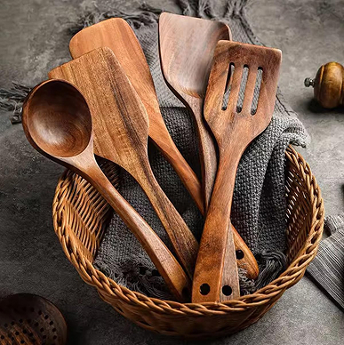

Cucharas indispensables
- Espatula dentada
- Cuchara no.1
- Cuchara no.2
- Cuchara no.3
- Cuchara no.4
- Cuchara sopera
- Colador
Preparado para toda ocasion
Pal buen sazon
Las cucharas de madera surgieron hace miles de años, como una de las herramientas más antiguas creadas por el ser humano para manipular alimentos. Antes de que existieran los metales o los plásticos, las personas ya usaban lo que tenían a su alcance: piedras, huesos, conchas, y sobre todo, madera, por ser fácil de tallar, abundante y resistente al calor. Las primeras cucharas no eran como las de hoy. Eran simples palos curvados, cáscaras de coco, pedazos de madera con una parte ahuecada o incluso huesos tallados. Con el tiempo, la técnica fue mejorando. En civilizaciones antiguas como la egipcia o la romana, ya había cucharas de madera con mangos decorados, y se usaban tanto en la cocina como en rituales religiosos. La madera fue siempre un material preferido porque no calienta como el metal, no cambia el sabor de los alimentos, y es más segura al usarla sobre superficies calientes. Además, como cada cultura tenía distintos tipos de árboles, el diseño y forma de las cucharas cambiaba según la región y los materiales disponibles.